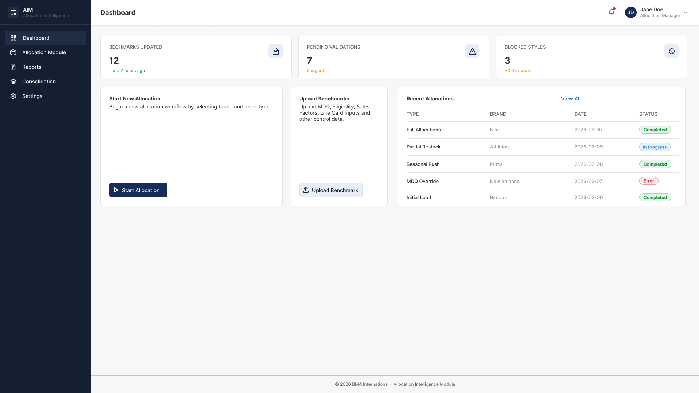
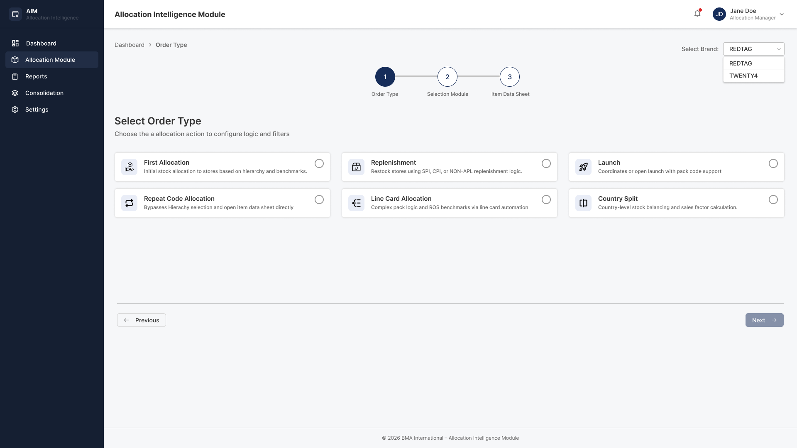
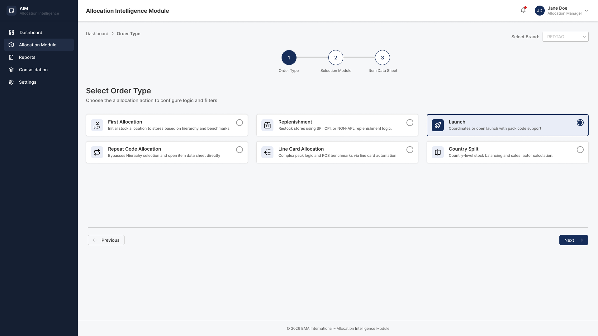
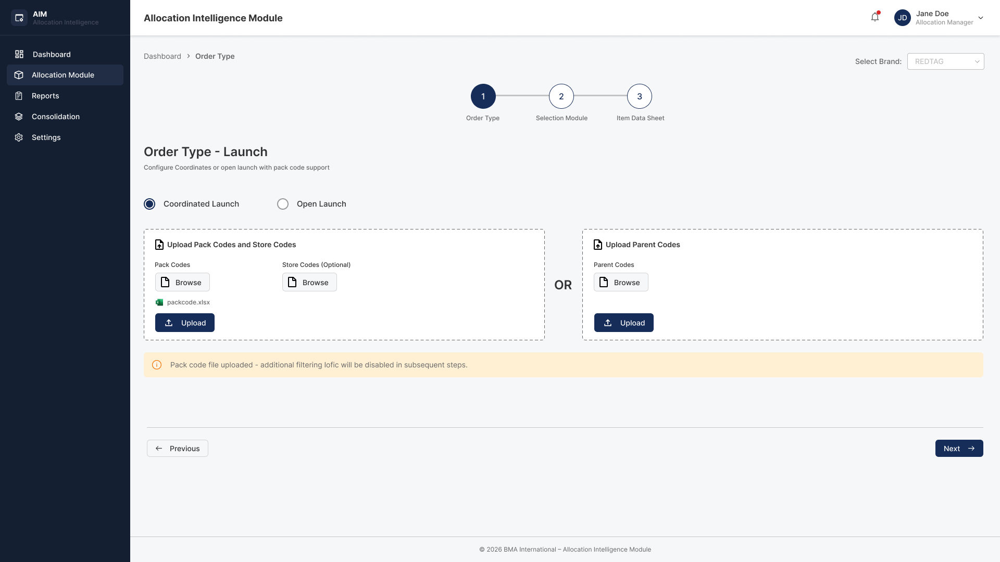
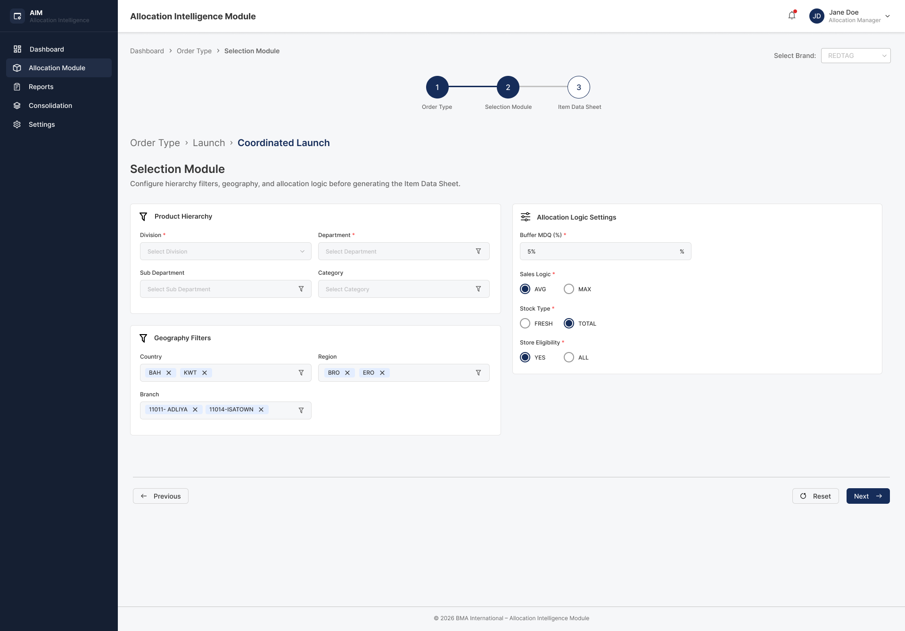
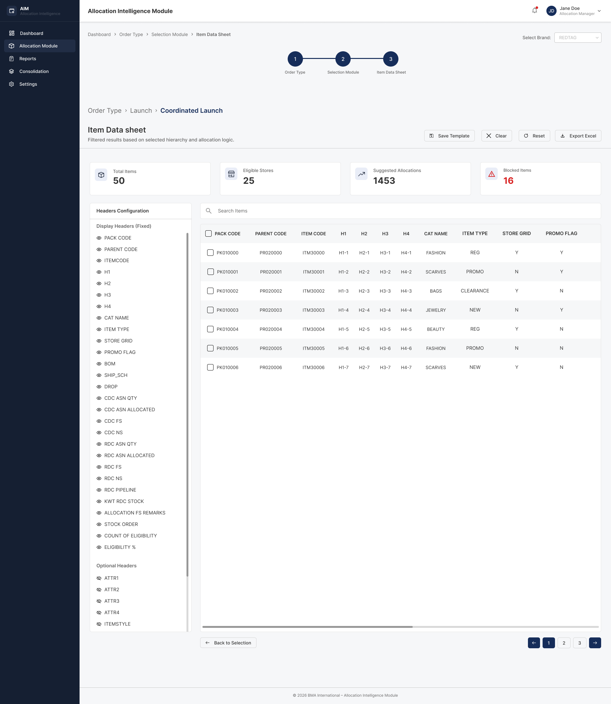

Case Study 02 — Deep Dive
Allocation Intelligence Module — AIM
Case Study 02 · Enterprise UX · Retail Allocation
How I designed AIM — the Allocation Intelligence Module — a complex multi-module web application that eliminated a fragile, manual stock distribution process across RedTag's retail network.
The Problem
RedTag — a multi-brand fashion retailer operating across the Gulf region — managed stock allocation across dozens of stores using Excel. Every morning, the allocation team would manually pull inventory data, apply distribution logic by hand, and push quantities to stores. One wrong formula, one outdated lookup, one missed row: and the wrong products ended up in the wrong stores.
The business needed a system that could encode their complex allocation logic — product hierarchies, country splits, sales factor weightings, buffer calculations — into a reliable, repeatable workflow. I was brought in as the sole UX designer to make that system something analysts would actually want to use every day.
"Every allocation was a risk. If someone made a formula error in Excel, we wouldn't know until stock had already moved. By then, fixing it cost us days."
— Allocation Manager, RedTag (Stakeholder Brief)Each allocation run required manually copying and transforming data across multiple Excel files. Repetitive, slow, and entirely dependent on individual attention.
A mistyped formula or a stale reference wouldn't surface until after stock had moved. There was no validation layer, no alerts, no blocked styles — no guardrails.
The allocation logic involved product hierarchies (H1–H4), country-level splits, sales factor configurations, and buffer percentages — none of it visible, auditable, or transferable.
My Process
Key Design Decisions
My first instinct — and the stakeholders' initial request — was a single long configuration page. It seemed efficient. But when I mapped all the inputs together, I realised the form had hard dependencies: you couldn't configure country splits before setting a product hierarchy. You couldn't reach item data without completing selection first. The sequence wasn't arbitrary — it was logical.
I introduced a 3-step wizard with a persistent progress stepper at the top. Each step is self-contained, validated before proceeding, and clearly labelled: Order Type → Selection Module → Item Data Sheet. This eliminated the "blank stare" problem where users didn't know what to fill first, and it naturally enforced data integrity — the system couldn't generate an allocation from incomplete configuration.
Interview talking point: "The wizard pattern wasn't just a UX choice — it was a data integrity decision. Enforcing sequence in the UI meant fewer validation errors in the back end. I aligned the user flow with the technical dependency graph."
The product hierarchy had four levels: Division (H1) → Department (H2) → Sub-Department (H3) → Category (H4). In Excel, analysts had to cross-reference lookup tables manually to understand what was valid at each level. In the new system, I designed cascading dropdowns where lower levels are locked until the higher level is selected.
I added a small amber contextual hint: "Lower hierarchy levels are enabled based on higher-level selection." This tiny detail — which I debated removing for being "obvious" — turned out to be one of the most praised elements in stakeholder reviews. First-time users read it. Experienced users ignored it. That's exactly what good hint text does.
Multi-select chip tags for department and category selections (BOY, GIR, BOA, BUL, BAG, HBG) also let analysts see their configuration at a glance without re-opening dropdowns — reducing cognitive load on a data-dense screen.
Interview talking point: "I spent real time on the contextual hint copy. It needed to be informative without being condescending. The principle I followed: write for the user on day three, not day one."
This was the hardest layout decision I made. Country split configuration (which countries, which split granularity, which sales factor), product hierarchy, and calculation control (buffer %, final AVG%) are three interdependent configurations. Putting them on separate steps would have created constant back-and-forth. Putting them all on one screen risked overwhelming users.
I landed on a 3-panel horizontal layout within a single wizard step: Product Hierarchy on the left, Country Split Configuration in the centre, Calculation Control on the right. This mirrored how analysts actually think — they consider hierarchy and country split simultaneously. The layout externalised that mental model into the interface.
The "Split by" toggles (Item Style, Range, Color) were a specific decision to represent a mutually-inclusive selection — not radio buttons, not checkboxes, but toggles — because analysts sometimes needed multiple split granularities enabled together.
Interview talking point: "I mapped the screens against the analysts' actual thought sequence before I drew a single frame. Layout decisions should reflect cognition, not just aesthetics."
The Item Data Sheet was where the allocation actually lived — 50 items, 25 eligible stores, 2,000 suggested allocations, and 16 blocked items surfaced in a summary bar at the top. The table itself had 25+ columns spanning fixed headers (PACK CODE, ITEM CODE, H1–H4, STORE GRID, PROMO FLAG) and optional attribute columns (ATTR1–4).
Putting 25+ columns in front of a user with no control is a recipe for overwhelm. I designed a left-panel column visibility manager with toggle-eye icons, split into "Display Headers (Fixed)" and "Optional Headers." Users could personalise what they saw without losing data — and a Save Template action preserved their configuration for future sessions.
The summary tiles (Total Items, Eligible Stores, Suggested Allocations, Blocked Items) at the top gave users instant allocation health awareness before they even looked at rows. The red "Blocked Items" tile was intentionally alarming — those needed immediate attention.
Interview talking point: "The summary tiles were designed to answer the first question every analyst asks when they land on a data sheet: 'Is this allocation healthy?' I wanted that answer visible in under a second, without reading a single row."
The dashboard could have been a simple landing page with a "Start" button. Instead, I designed it as an operational control tower. Three status tiles at the top — Benchmarks Updated (12), Pending Validations (7, with 5 urgent), and Blocked Styles (3, +3 this week) — surface the health of the entire allocation pipeline before any action is taken.
The Recent Allocations table showed real-time allocation history by type, brand, date, and status — including Error states, which are as important to surface as Completed ones. An analyst could return to the dashboard after lunch and immediately know: has anything broken? what's pending? what needs me?
The "Start New Allocation" call-to-action was intentionally prominent but not the only thing on the screen. The dashboard had to serve the returning user, not just the first-time user.
Interview talking point: "I always design dashboards for the 90% case, not the 10% case. The 90% case here was a returning analyst, not a new user. That's why operational status came first, and onboarding CTAs came second."
Screen Walkthrough






Click any screen to enlarge
Outcomes & Impact
Reflection
Building a complex enterprise tool as a solo designer is demanding and rewarding in equal measure. Looking back, here's what I learned — and what I'd change.
Working from stakeholder requirements meant I was designing for a described workflow, not an observed one. A few sessions watching analysts work in Excel before any design started would have surfaced edge cases I only caught later in review.
Empty states — dashboard with no recent allocations, data sheet with no filtered results — were designed last. They should have been designed alongside the filled states, because they're what users see most when they're confused.
We validated through stakeholder reviews, not analyst testing. Given access, I'd have run at least two task-based tests — "complete a Country Split allocation for REDTAG, BOY department" — to catch any flow friction before development locked things in.
There was pushback on putting three panels on one screen. I'm glad I held the position. The alternative — separate steps for hierarchy, country, and calculation — would have added three extra clicks per allocation run, multiplied by daily usage, multiplied by every analyst. Friction compounds.
Let's Work Together